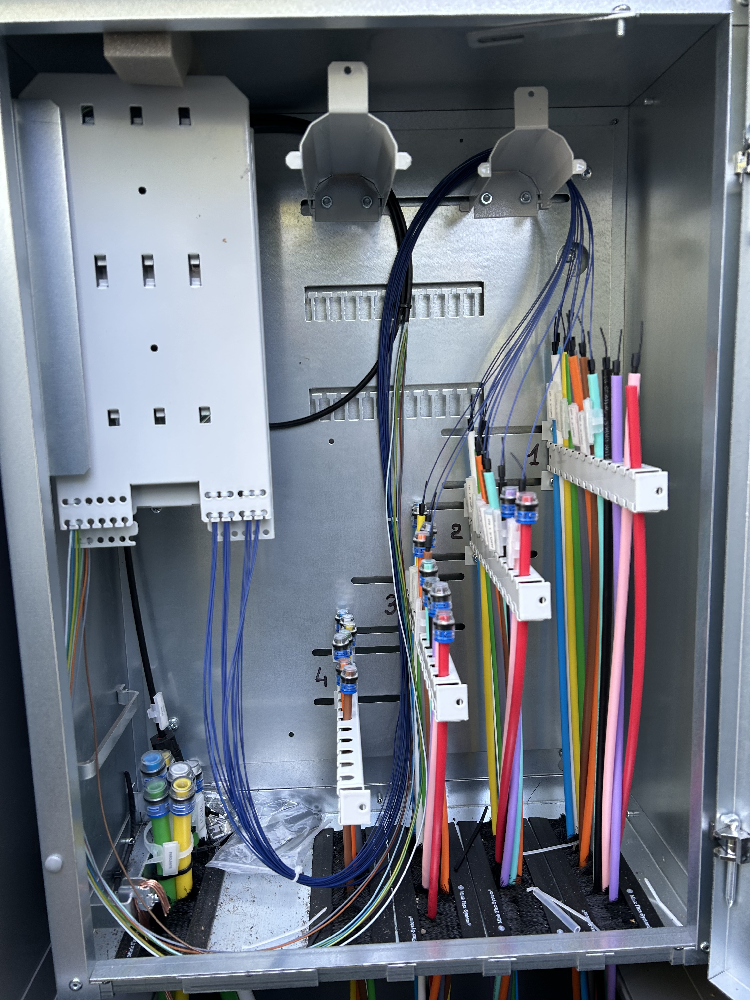

RAKENNAMME HUOMISEN VERKOT
Fibreco Oy toteuttaa valokuituverkkojen tele- ja kaivuutyöt ammattitaidolla. Toimitamme urakat sovitussa aikataulussa laadusta tinkimättä!
Fibreco Oy toteuttaa valokuituverkkojen tele- ja kaivuutyöt ammattitaidolla. Toimitamme urakat sovitussa aikataulussa laadusta tinkimättä!
Valokuitukaapelin puhallukset, kaappiasennukset, hitsaukset ja jatkokset. Toteutamme teleurakat kokonaisvastuulla alusta loppuun.
Hoidamme maanrakennustyöt luotettavasti yksittäisistä tonttikaivuista aina suurempiin projekteihin saakka.
Reagoimme nopeasti ja hoidamme viankorjauksen ympäri vuorokauden.
Toteutamme kaikki teletyöt kokonaisvastuullisesti. Valokuitukaapelin puhallukset, kaappiasennukset, hitsaukset ja jatkokset kuuluvat ydinosaamiseen. Tiimimme varmistaa, että jokainen urakka valmistuu laadukkaasti ja sovitussa aikataulussa.


Kaikenkokoiset kaivinkonetyöt ja maanrakennustyöt kuuluvat palveluihimme. Kaivamme kaapeliojat, asennusreitit ja teemme tarvittavat maansiirtotyöt tehokkaasti. Moderni kalusto ja kokeneet kuljettajat takaavat laadukkaan lopputuloksen.
Kiinnostuitko? Ota yhteyttä!
Ota yhteyttä